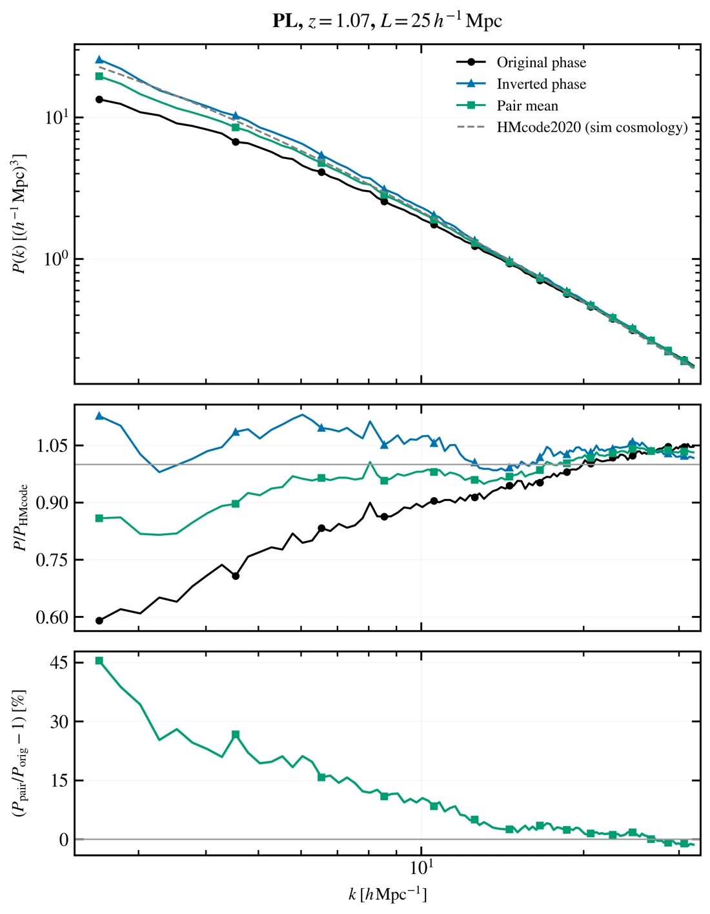
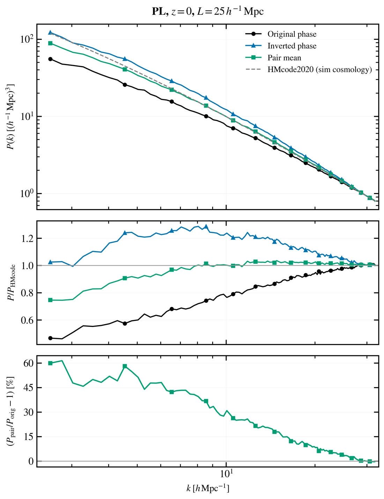
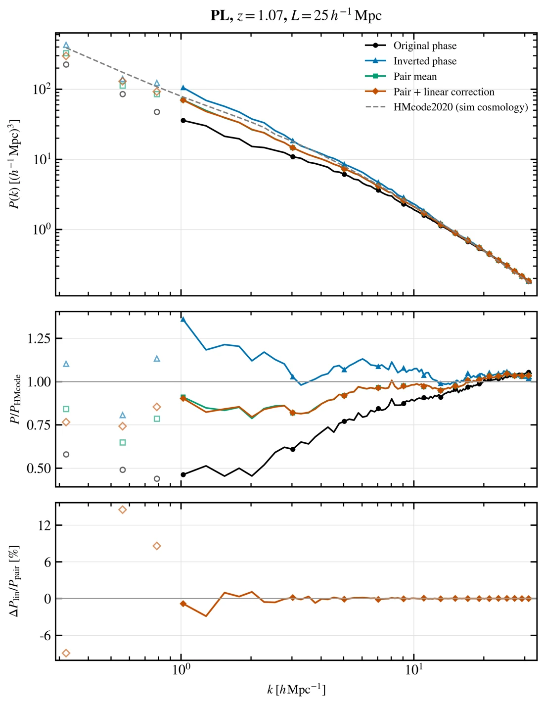
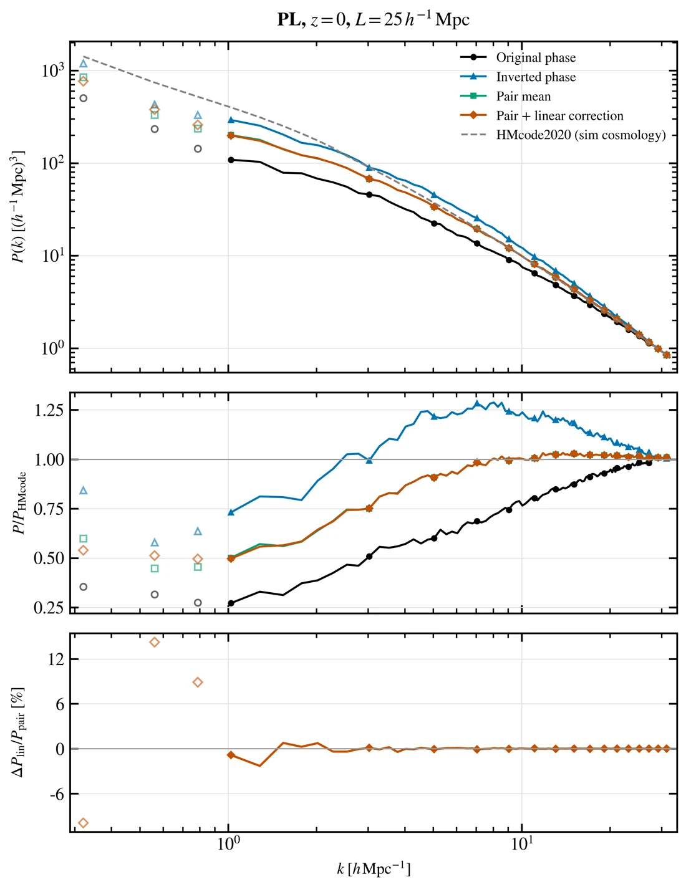
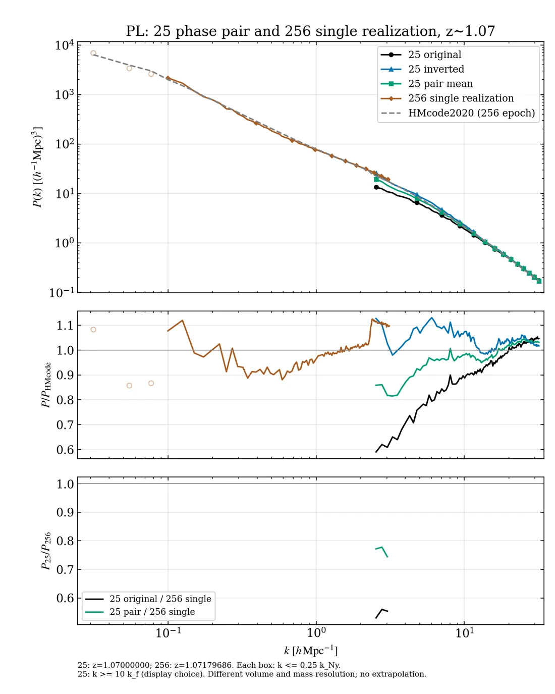
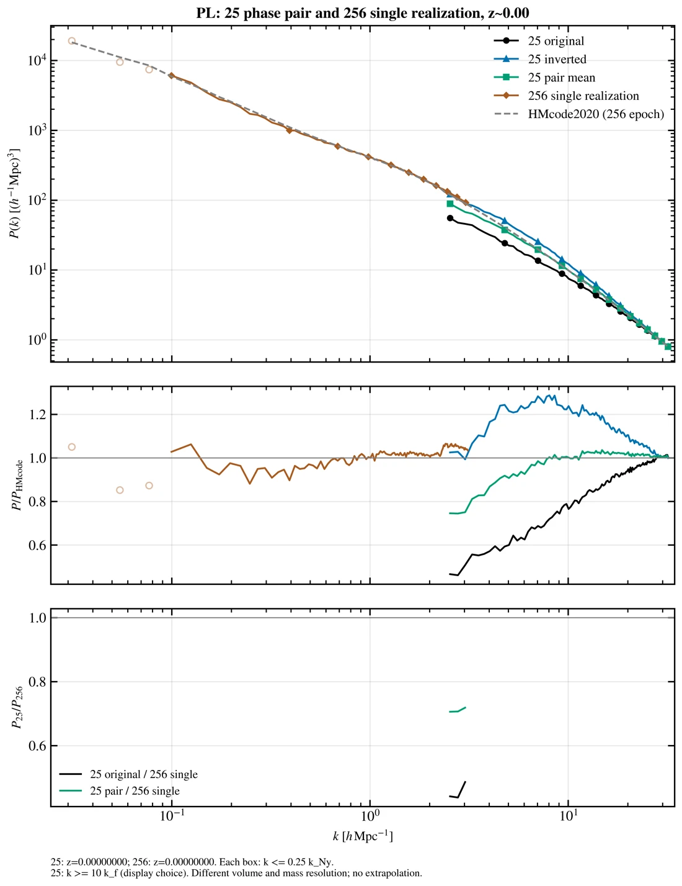
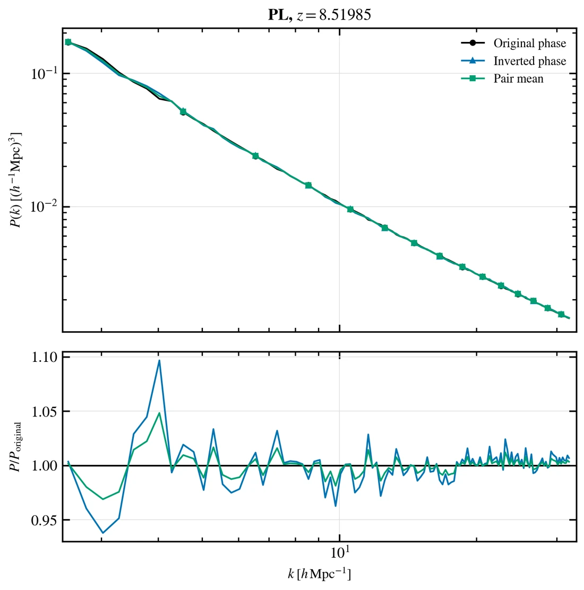
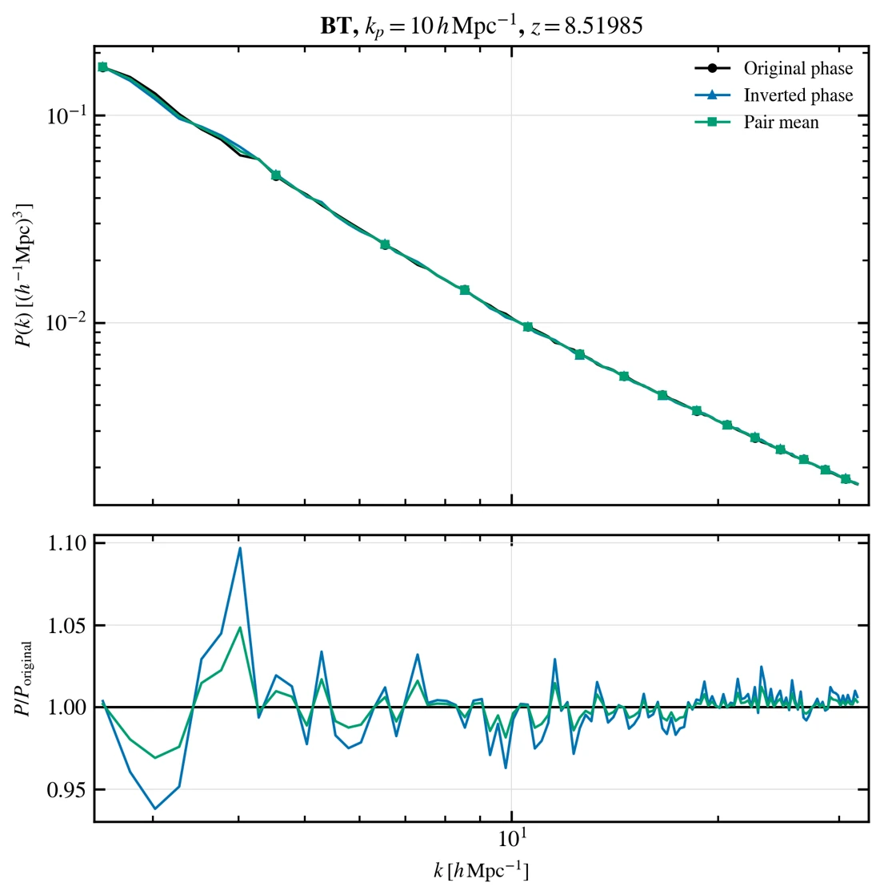
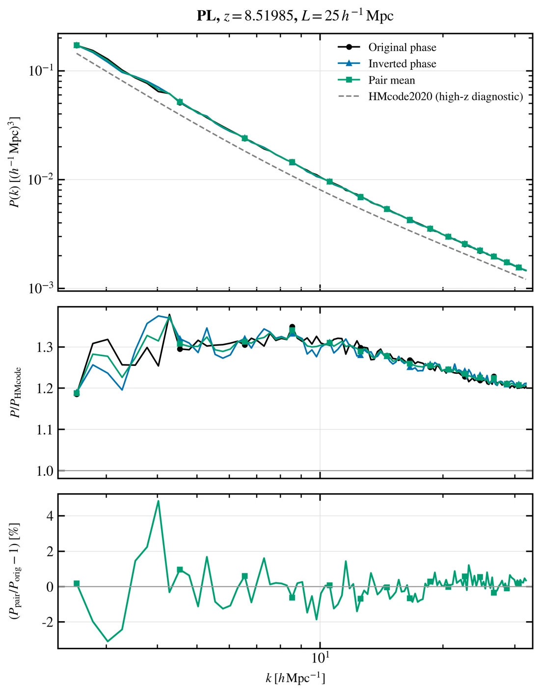

SUPPLEMENT / PHASE-PAIR DIAGNOSTIC
PL 反相功率谱PL PHASE-PAIR POWER SPECTRA
这是独立于论文主图的诊断结果，比较 25 h−1 Mpc、1024³ 粒子 PL 模拟的原相位与反相位功率谱。结果包含 z=0、z≈1.07，以及新增的z=8.51985的PL和BT kp10图；尚未替换论文图表或主页面的统计数据。
下方图片及 PNG/PDF 下载已更新为当前版本。25盒的相位平均和两盒对比图采用 k≥10kf≈2.5133 h Mpc−1，首个显示点为2.5367。这是显示下界，尚未证明该范围内的有限体积偏差已经收敛。外部私有查看页仍为旧版。
01 / PHASE AVERAGING · z≈1.07
反相平均后与参考谱更接近


02 / PHASE AVERAGING · z=0
平均后仍有明显的低 k 差异


03 / LINEAR-REALIZATION CORRECTION
初始线性实现修正没有消除剩余差异
历史诊断图：本节两图保留原来的完整显示范围，尚未应用10kf下界，用于记录此前的线性修正测试。
橙色曲线在绿色平均功率上加 ΔPlin=G²[Plin,theory(zi)−Plin,box(zi)]。这里 G 是从初始时刻到目标时刻的线性增长响应；修正针对初始线性实现差异，不是从模拟中减去非线性耦合。




04 / BOX COMPARISON · SINGLE REALIZATION
加入256盒后，z=0 的差异仍然存在
棕色曲线是当前论文所用的 256 h−1 Mpc、1024³ 粒子 PL 单次实现，没有反相平均。两盒采用相同的 1024³ NGP 测量口径，分别只显示 k≤0.25kNy；256盒的上限为 3.14 h Mpc−1。25盒仅显示 k≥10kf；256盒仍保留原范围，其低于4kf的点以浅色空心标记显示。没有按与 HMcode 的吻合程度筛选点。




底 panel 只在两盒共有采样范围内计算，对256盒功率作 log k–log P 插值，不外推。两盒粒子数相同，256盒的粒子质量约为25盒的1074倍；同时相位实现和平均方式不同。因此这些曲线是辅助诊断，不是纯粹的盒子体积收敛试验。
HIGH REDSHIFT / EXACT-EPOCH PHASE PAIRS
高红移：PL与BT kp10
两组原相位0032与反相位0000均对应 a=0.10504366522854312、z=8.519850605215494，没有时间插值。采用1024³ NGP网格，每份功率谱扣除一次 V/N；显示10kf≤k≤0.25kNy。BT kp1尚未提供本批对应快照。






05 / METHOD & REFERENCE
曲线与计算口径
- 黑色：原相位；蓝色：反相位；绿色：两份功率谱的算术平均，不是先平均密度场。
- 橙色：按 Pontzen et al. 的 Eq. (16) 加入初始线性谱实现差异的诊断修正；灰色：HMcode2020 暗物质参考谱。不同视图显示其中的对应曲线。
- 两种相位采用同一种 1024³ NGP 网格估计器，每份非线性功率谱减去一次 V/N；未做 NGP 窗函数反卷积、折叠或混叠修正。
- 当前25盒相位平均和两盒对比图采用10kf≤k≤0.25kNy，其中 kf=2π/L≈0.251327 h Mpc−1。实际显示点为2.5367至31.9198 h Mpc−1。这是显示选择，不是经过收敛验证的可信区间。历史线性修正图保留旧范围。
- z≈1.07 图以反相快照的实际 z=1.0700000000000003 为目标，对原模拟 0048、0049 的功率谱作时间插值。原 0048 的实际红移为 1.0717968600643704。z=0 两份快照为同一时刻。
理论参考与限制
当前参考采用 Ωm=0.3153、Ωb=0.0493、ΩΛ=0.6847、h=0.6736、ns=0.9649、σ8=0.8111，线性输入为 Eisenstein–Hu，非线性模型为 HMcode2020 DMO。对应已核查结果作业为 2165281。后来测试的 σ8≈0.83549 版本未采用。
反相平均可抵消部分相位相关偏差，但两份模拟不是独立实现，不能直接声称误差缩小 √2。反相平均和 Eq. (16) 都不能恢复盒子缺失的长波模式，也不能保证消除全部非线性有限体积偏差。z=0 的低 k 差异仍存在，不能仅凭这些曲线确定原因。
English Summary
The four figures show phase averaging at z≈1.07 and z=0, followed by the corresponding Eq. (16) linear-realization diagnostics. In the pair-only figures the bottom panel is the change relative to the original phase; in the correction figures it is the additional correction relative to the pair mean. Neither is an error bar. Phase averaging moves the original result closer to HMcode but leaves a substantial low-k deficit at z=0. Eq. (16) makes only a small change near k≈1 h Mpc−1 and does not establish the cause of the residual mismatch. The reference remains HMcode2020 DMO with σ8=0.8111 and the simulation background parameters. The PNG/PDF files on this page are public. The external viewer remains private. These diagnostics have not replaced manuscript figures or main explorer data.
Current phase-pair and box-comparison figures apply k≥10kf to the 25-box data. The two linear-correction figures retain their historical range. The 256-box selection is unchanged. The external private viewer still shows the earlier version.
The high-redshift section adds exact-epoch PL and BT kp10 phase pairs at z=8.519850605215494. Their ratio panels use model-specific HMcode2020 references, with the BT input shape and shared sigma8 normalization matching the IC configuration. These comparisons remain diagnostic: HMcode reported insufficient low-ν table coverage at this epoch.
更新日期 / Updated: 2026-10-10